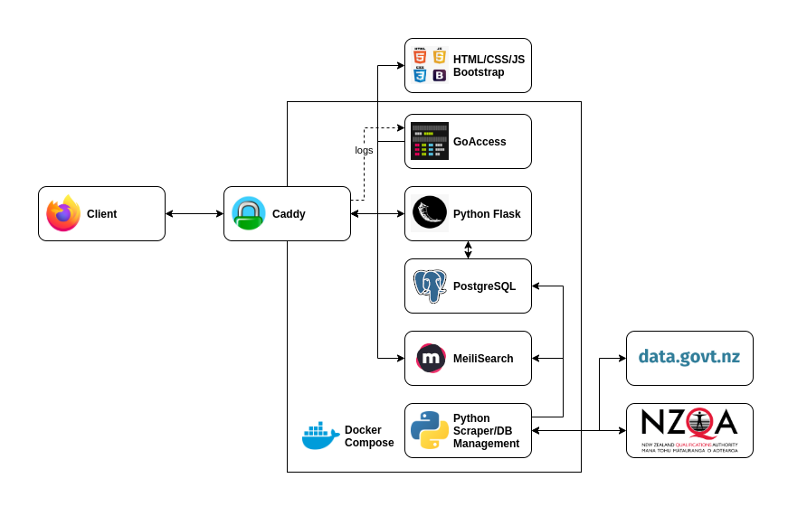

About
The system to support this system is built on the following elements, all containerised through Docker, and composed through Docker Compose
- Python with Beautiful Soup
- for scraping and managing where the scraped data goes.
- MeiliSearch
- for serving fast, typo-resistant search results for both subjects and standards.
- PostgreSQL
- for providing a scalable, production-quality database.
- Python with Flask
- for accessing and serving the data from the database to the frontend.
- Caddy
- for directing traffic and auto-SSL certificates from LetsEncrypt.
- GoAccess
- for reading Caddy logs and running a websocket, where a dashboard can be connected.
- HTML/CSS/JS + Bootstrap
- for writing and running the frontend.
